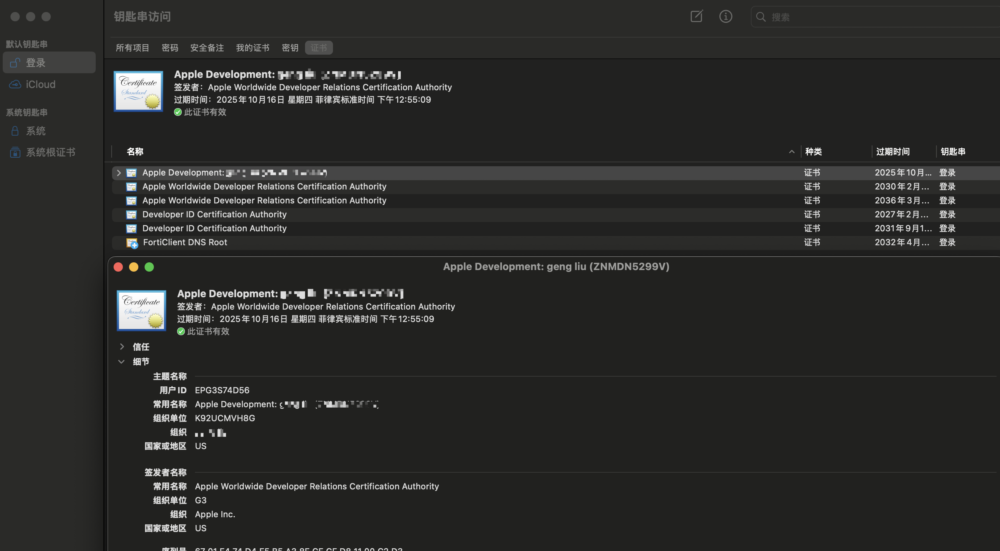
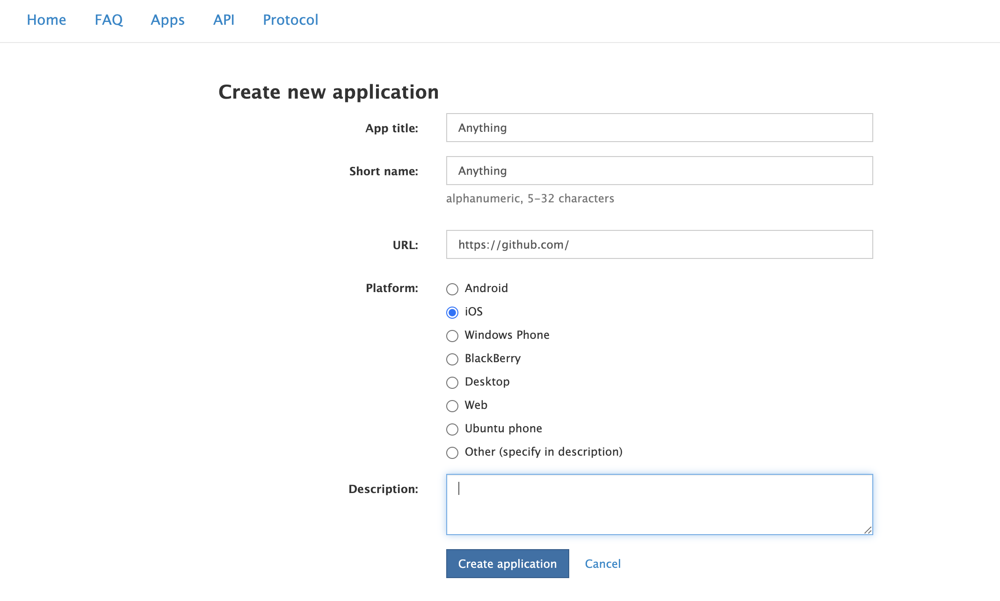
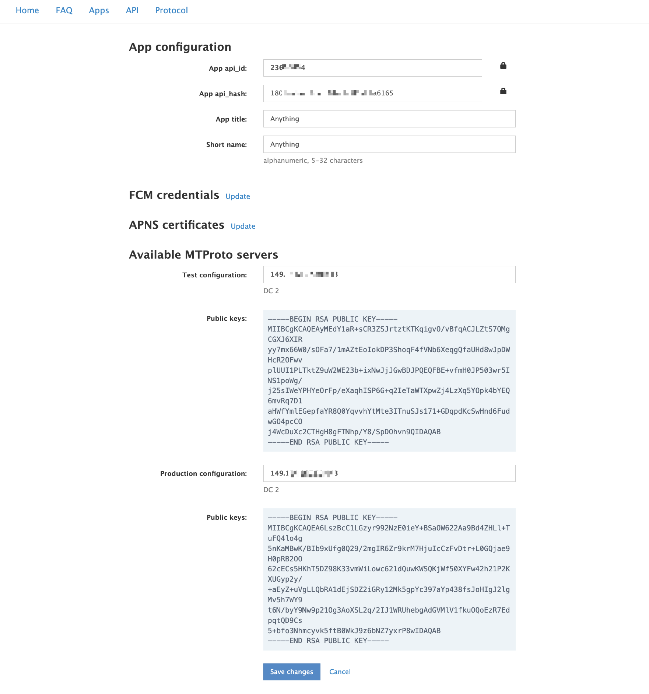
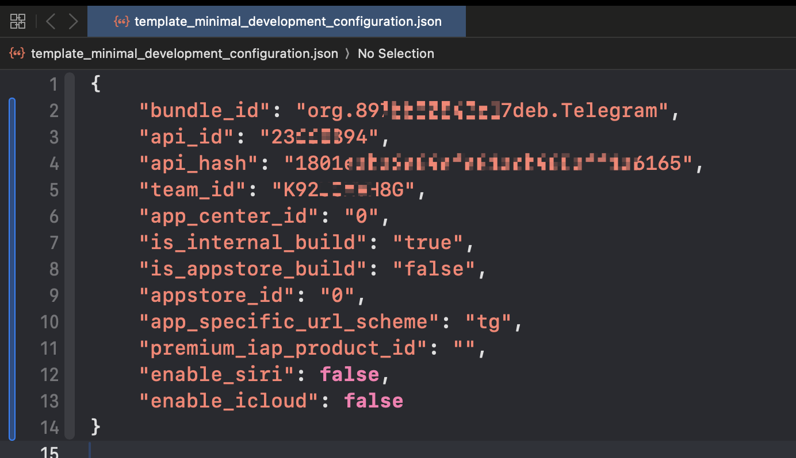
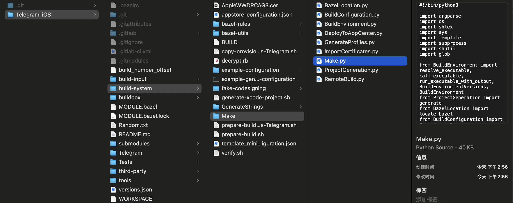
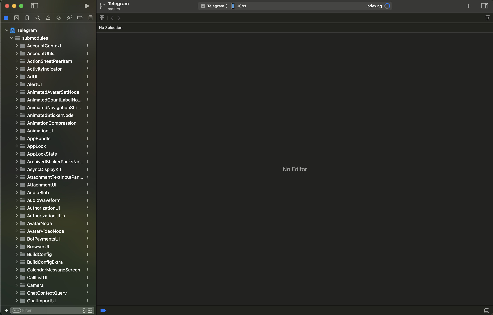
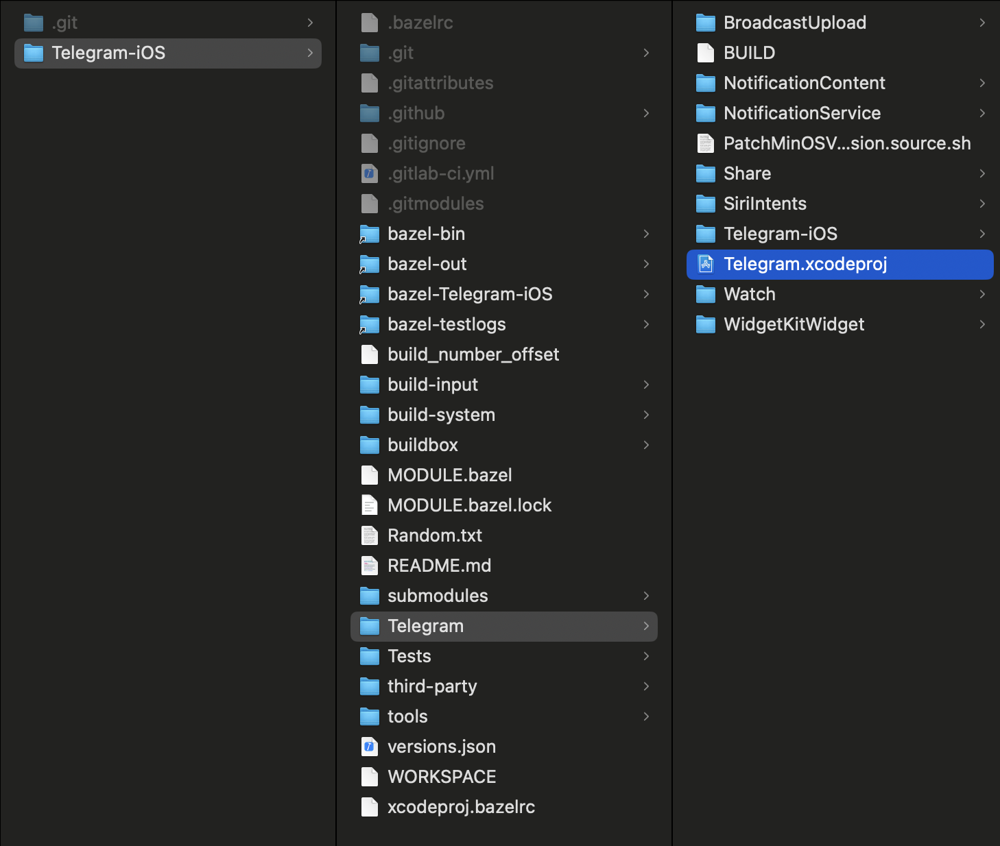

当前总行数：0 行
1、准备工作#
-
简介
- Telegram.iOS 项目是一个开源项目，使用了一种模块化的开发方式，这使得其项目结构与普通的 iOS 项目有所不同。且但它的结构和配置相对复杂；
- 在Telegram.iOS 源代码里面是没有直接的
*.h、*.m以及*.swift这种常规化的代码；这么做的原因：- 跨平台设计
- 代码混淆和压缩
- 最后因为是脚本生成代码，所以脚本可能会有变化，可能与网上教程存在差异化，一切以官方
readme.md为准； - 动态依赖和私有模块：Telegram 的项目使用了大量自定义的模块化代码和私有库（如
TelegramCore、Postbox等），这些模块的构建也依赖 Bazel ； - 为什么用 Bazel 而不是 Xcode 的原生构建？
- 跨平台支持：Telegram 不仅支持 iOS，还支持 Android、macOS、Windows 和 Linux 等平台。Bazel 是一个跨平台构建工具，它允许共享逻辑代码，避免重复开发；
- 复杂依赖管理：Telegram 的代码库非常庞大，依赖多个自定义模块和库。用 Bazel 可以更高效地管理这些依赖，而不需要依赖 CocoaPods 或 Swift Package Manager；
- 更快的构建速度：Bazel 的增量构建比 Xcode 原生构建更快，特别是在处理大型项目时，可以显著节省时间。
- 可重复的构建：Bazel 提供更强的构建一致性（Reproducible Builds），保证每次构建产物相同，便于 CI/CD 流程。
- 需要有一个iOS的开发者账户
-
相关资料阅读
-
入口文件
-
尤其是 Xcode 的入口文件（如
.xcodeproj或.xcworkspace）并不像普通项目那样显而易见（源代码没有提供直接的普通项目的xcode入口文件） -
运行脚本时，Bazel 会解析项目的
BUILD配置文件并生成.xcodeproj-
python3 build-system/Make/Make.py \ --cacheDir="$HOME/telegram-bazel-cache" \ generateProject \ --configurationPath=build-system/template_minimal_development_configuration.json \ --xcodeManagedCodesigning -
Telegram_xcodeproj-runner.sh这个脚本最终会生成Telegram.xcodeproj
-
-
Telegram 的源码中包含许多
BUILD文件，这些是 Bazel 用来描述项目结构、依赖关系和构建目标的配置文件。这些文件取代了 Xcode 工程中的配置部分
-
-
获取源代码
--recursive会读取.gitmodules文件，并拉取子模块-j<n>(-job<n>)同时抓取的子模块数。默认为submodule.fetchJobs选项
git clone --recursive -j8 https://github.com/TelegramMessenger/Telegram-iOS.git -
本地配置
-
安装必要的软件
-
Python（可以利用Homebrew）安装
macOS 自带一个较旧版本的 Python (
/usr/bin/python)，建议使用python3指令运行新安装的 Python。brew install python python3 --version pip3 --version -
Xcode
- xcode官方下载地址(处于安全考虑，Apple官方经常会隐藏历史版本，而找不到下载地址)
- Xcode Releases(推荐)
-
Xcode Command Line Tools
安装及验证
xcode-select --install xcode-select -p # 验证安装是否成功。如果返回路径 /Library/Developer/CommandLineTools，则表示安装成功。在某些情况下需要首先进行移除安装，重置环境
sudo rm -rf /Library/Developer/CommandLineTools xcode-select --install -
Bazel：是一个快速、可扩展的 构建工具，主要用于编译和测试代码，支持各种语言和平台。它最初是由 Google 开发的，并被用于构建和管理 Google 的复杂代码库。后来，Google 开源了 Bazel，成为开发者社区中的流行工具
brew install bazel # 安装最新版本 brew install bazel@5 ## 指定版本（5）安装 brew link --force bazel@5 ## 创建符号链接 brew upgrade bazel # 升级到最新版本 bazel --version # 验证安装 brew uninstall bazel # 卸载bazel build //path/to:target # 构建目标 bazel test //path/to:test # 测试代码 bazel clean # 清理构建缓存清理构建缓存
➜ Telegram-iOS git:(master) ✗ bazel clean --expunge Extracting Bazel installation... Starting local Bazel server and connecting to it... INFO: Starting clean (this may take a while). Consider using --async if the clean takes more than several minutes.特性 Bazel Make/CMake Gradle Maven 多语言支持 ✅ ❌（有限） ✅（较好） ❌（主要支持 Java） 增量构建 ✅ ❌（需要配置） ✅ ✅ 跨平台 ✅ ✅（有限） ❌（主要支持 JVM） ❌（主要支持 JVM） 可扩展性 ✅（规则自定义） ❌（较差） ✅（插件体系） ✅（插件体系） 分布式构建 ✅ ❌ ✅（较弱） ❌（无支持）
-
-
生成随机标识符
➜ ~ openssl rand -hex 8 897bb50843c17deb -
打开
Keychain Access（钥匙串访问）：默认钥匙串→证书→双击Apple Development:XXX显示证书简介，如下图所示：
Organizational Unit（组织单位）。这是团队 ID。
-
Telegram创建API获取
api_id和api_hash-
第一步 打开官方网址 并输入你的电报手机号码(记得带+号) 点击：NEXT
-
第二步 这时候你的电报会收到一个 code
-
第三步 填写到 code 并点击：Sign IN
-
第四步 登录成功后 点击：API development tools
-
页面填写 App title 和 Short name =>
api_id+api_hash
页面填写通过以后，会有下列的结果

-
-
编辑
build-system/template_minimal_development_configuration.json。使用前面步骤中的数据
-
-
编译
-
必须依赖正确安装配置的Xcode Command Line Tools（包括系统存在此程序，以及指向的关联路径正确）如若不然，运行下列👇🏻进行修复：
➜ ~ sudo xcode-select --switch /Applications/Xcode.app/Contents/Developer -
因为脚本是指定Xcode的版本，如果基于某些Xcode预览版，脚本或许无法正确运行，例如：
➜ Telegram-iOS git:(master) ✗ python3 build-system/Make/Make.py \ --cacheDir="$HOME/telegram-bazel-cache" \ generateProject \ --configurationPath=build-system/template_minimal_development_configuration.json \ --xcodeManagedCodesigning Required Xcode version is 16.0, but 16.2 is reported by 'xcode-select -p'
-
编译成功的日志
➜ Telegram-iOS git:(master) ✗ python3 build-system/Make/Make.py \ --cacheDir="$HOME/telegram-bazel-cache" \ generateProject \ --configurationPath=build-system/template_minimal_development_configuration.json \ --xcodeManagedCodesigning Starting local Bazel server and connecting to it... INFO: Analyzed target //Telegram:Telegram_xcodeproj (9 packages loaded, 21 targets configured). INFO: Found 1 target... Target //Telegram:Telegram_xcodeproj up-to-date: bazel-bin/Telegram/Telegram_xcodeproj-runner.sh INFO: Elapsed time: 5.050s, Critical Path: 0.03s INFO: 11 processes: 10 internal, 1 local. INFO: Build completed successfully, 11 total actions INFO: Running command line: bazel-bin/Telegram/Telegram_xcodeproj-runner.sh Generating "Telegram/Telegram.xcodeproj" Starting local Bazel server and connecting to it... INFO: Invocation ID: f8fb790a-5482-4431-9952-b512c655ee02 INFO: Options provided by the client: Inherited 'common' options: --isatty=1 --terminal_columns=151 INFO: Reading rc options for 'run' from /Users/admin/Documents/GitHub/Telegram.iOS/Telegram-iOS/xcodeproj.bazelrc: Inherited 'build' options: --announce_rc --features=swift.use_global_module_cache --verbose_failures --experimental_remote_cache_async --features=swift.enable_batch_mode --swiftcopt=-j9 --define=buildNumber=10000 --define=telegramVersion=11.6 --disk_cache=/Users/admin/telegram-bazel-cache --override_repository=build_configuration=/Users/admin/Documents/GitHub/Telegram.iOS/Telegram-iOS/build-input/configuration-repository --//Telegram:disableExtensions --//Telegram:disableStripping --features=-swift.debug_prefix_map INFO: Reading rc options for 'run' from /Users/admin/Documents/GitHub/Telegram.iOS/Telegram-iOS/.bazelrc: Inherited 'build' options: --action_env=ZERO_AR_DATE=1 --apple_platform_type=ios --enable_platform_specific_config --apple_crosstool_top=@local_config_apple_cc//:toolchain --crosstool_top=@local_config_apple_cc//:toolchain --host_crosstool_top=@local_config_apple_cc//:toolchain --cxxopt=-std=c++17 --per_file_copt=third-party/webrtc/.*.cpp$,@-std=c++17 --per_file_copt=third-party/webrtc/.*.cc$,@-std=c++17 --per_file_copt=third-party/webrtc/.*.mm$,@-std=c++17 --per_file_copt=submodules/LottieMeshSwift/LottieMeshBinding/Sources/.*.mm$,@-std=c++17 --per_file_copt=submodules/LottieCpp/lottiecpp/Sources/.*.mm$,@-std=c++17 --per_file_copt=submodules/LottieCpp/lottiecpp/Sources/.*.cpp$,@-std=c++17 --per_file_copt=submodules/LottieCpp/lottiecpp/PlatformSpecific/Darwin/Sources/.*.mm$,@-std=c++17 --per_file_copt=submodules/LottieCpp/lottiecpp/PlatformSpecific/Darwin/Sources/.*.cpp$,@-std=c++17 --per_file_copt=Tests/LottieMetalTest/SoftwareLottieRenderer/Sources/.*.cpp$,@-std=c++17 --per_file_copt=Tests/LottieMetalTest/SoftwareLottieRenderer/Sources/.*.mm$,@-std=c++17 --swiftcopt=-whole-module-optimization --per_file_copt=.*.m$,@-fno-objc-msgsend-selector-stubs --per_file_copt=.*.mm$,@-fno-objc-msgsend-selector-stubs --features=debug_prefix_map_pwd_is_dot --features=swift.cacheable_swiftmodules --features=swift.debug_prefix_map --features=swift.enable_vfsoverlays --strategy=Genrule=standalone --spawn_strategy=standalone --strategy=SwiftCompile=standalone --define RULES_SWIFT_BUILD_DUMMY_WORKER=1 --noenable_bzlmod INFO: Found applicable config definition common:rules_xcodeproj_generator in file /private/var/tmp/_bazel_admin/466e7bf10140e50c663f198d86f49651/execroot/__main__/bazel-out/darwin_arm64-fastbuild/bin/Telegram/Telegram_xcodeproj.bazelrc: --config=rules_xcodeproj INFO: Found applicable config definition common:rules_xcodeproj in file /private/var/folders/z8/vw_qs5sn679_j_yhqltmcr3m0000gn/T/tmp.P7venwj1Pl/pre_xcodeproj.bazelrc: --xcode_version=16A242d --repo_env=DEVELOPER_DIR=/Applications/Xcode.app/Contents/Developer --repo_env=USE_CLANG_CL=16A242d --repo_env=XCODE_VERSION=16A242d INFO: Found applicable config definition common:rules_xcodeproj in file /private/var/tmp/_bazel_admin/466e7bf10140e50c663f198d86f49651/execroot/__main__/bazel-out/darwin_arm64-fastbuild/bin/Telegram/Telegram_xcodeproj.bazelrc: --verbose_failures --cache_computed_file_digests=500000 --compilation_mode=dbg --experimental_action_cache_store_output_metadata --experimental_convenience_symlinks=ignore --experimental_use_cpp_compile_action_args_params_file --define=apple.experimental.tree_artifact_outputs=1 --features=apple.swizzle_absolute_xcttestsourcelocation --features=oso_prefix_is_pwd --features=relative_ast_path --features=swift.cacheable_swiftmodules --features=swift.index_while_building --features=swift.use_global_index_store --features=swift.use_global_module_cache --nolegacy_important_outputs --show_result=0 --noworker_sandboxing --spawn_strategy=remote,worker,local INFO: Analyzed target @@rules_xcodeproj_generated//generator/Telegram/Telegram_xcodeproj:Telegram_xcodeproj (729 packages loaded, 30857 targets configured). INFO: From Compiling Swift module @@com_github_apple_swift_argument_parser//:ArgumentParser [for tool]: external/com_github_apple_swift_argument_parser/Sources/ArgumentParser/Usage/DumpHelpGenerator.swift:12:22: warning: using '@_implementationOnly' without enabling library evolution for 'ArgumentParser' may lead to instability during execution 10 | //===----------------------------------------------------------------------===// 11 | 12 | @_implementationOnly import ArgumentParserToolInfo | `- warning: using '@_implementationOnly' without enabling library evolution for 'ArgumentParser' may lead to instability during execution 13 | @_implementationOnly import class Foundation.JSONEncoder 14 | external/com_github_apple_swift_argument_parser/Sources/ArgumentParser/Usage/DumpHelpGenerator.swift:13:22: warning: using '@_implementationOnly' without enabling library evolution for 'ArgumentParser' may lead to instability during execution 11 | 12 | @_implementationOnly import ArgumentParserToolInfo 13 | @_implementationOnly import class Foundation.JSONEncoder | `- warning: using '@_implementationOnly' without enabling library evolution for 'ArgumentParser' may lead to instability during execution 14 | 15 | internal struct DumpHelpGenerator { external/com_github_apple_swift_argument_parser/Sources/ArgumentParser/Usage/MessageInfo.swift:12:22: warning: using '@_implementationOnly' without enabling library evolution for 'ArgumentParser' may lead to instability during execution 10 | //===----------------------------------------------------------------------===// 11 | 12 | @_implementationOnly import protocol Foundation.LocalizedError | `- warning: using '@_implementationOnly' without enabling library evolution for 'ArgumentParser' may lead to instability during execution 13 | @_implementationOnly import class Foundation.NSError 14 | external/com_github_apple_swift_argument_parser/Sources/ArgumentParser/Usage/MessageInfo.swift:13:22: warning: using '@_implementationOnly' without enabling library evolution for 'ArgumentParser' may lead to instability during execution 11 | 12 | @_implementationOnly import protocol Foundation.LocalizedError 13 | @_implementationOnly import class Foundation.NSError | `- warning: using '@_implementationOnly' without enabling library evolution for 'ArgumentParser' may lead to instability during execution 14 | 15 | enum MessageInfo { external/com_github_apple_swift_argument_parser/Sources/ArgumentParser/Usage/UsageGenerator.swift:12:22: warning: using '@_implementationOnly' without enabling library evolution for 'ArgumentParser' may lead to instability during execution 10 | //===----------------------------------------------------------------------===// 11 | 12 | @_implementationOnly import protocol Foundation.LocalizedError | `- warning: using '@_implementationOnly' without enabling library evolution for 'ArgumentParser' may lead to instability during execution 13 | 14 | struct UsageGenerator { INFO: From Compiling Swift module @@com_github_apple_swift_argument_parser//:ArgumentParser [for tool]: external/com_github_apple_swift_argument_parser/Sources/ArgumentParser/Usage/DumpHelpGenerator.swift:12:22: warning: using '@_implementationOnly' without enabling library evolution for 'ArgumentParser' may lead to instability during execution 10 | //===----------------------------------------------------------------------===// 11 | 12 | @_implementationOnly import ArgumentParserToolInfo | `- warning: using '@_implementationOnly' without enabling library evolution for 'ArgumentParser' may lead to instability during execution 13 | @_implementationOnly import class Foundation.JSONEncoder 14 | external/com_github_apple_swift_argument_parser/Sources/ArgumentParser/Usage/DumpHelpGenerator.swift:13:22: warning: using '@_implementationOnly' without enabling library evolution for 'ArgumentParser' may lead to instability during execution 11 | 12 | @_implementationOnly import ArgumentParserToolInfo 13 | @_implementationOnly import class Foundation.JSONEncoder | `- warning: using '@_implementationOnly' without enabling library evolution for 'ArgumentParser' may lead to instability during execution 14 | 15 | internal struct DumpHelpGenerator { external/com_github_apple_swift_argument_parser/Sources/ArgumentParser/Usage/MessageInfo.swift:12:22: warning: using '@_implementationOnly' without enabling library evolution for 'ArgumentParser' may lead to instability during execution 10 | //===----------------------------------------------------------------------===// 11 | 12 | @_implementationOnly import protocol Foundation.LocalizedError | `- warning: using '@_implementationOnly' without enabling library evolution for 'ArgumentParser' may lead to instability during execution 13 | @_implementationOnly import class Foundation.NSError 14 | external/com_github_apple_swift_argument_parser/Sources/ArgumentParser/Usage/MessageInfo.swift:13:22: warning: using '@_implementationOnly' without enabling library evolution for 'ArgumentParser' may lead to instability during execution 11 | 12 | @_implementationOnly import protocol Foundation.LocalizedError 13 | @_implementationOnly import class Foundation.NSError | `- warning: using '@_implementationOnly' without enabling library evolution for 'ArgumentParser' may lead to instability during execution 14 | 15 | enum MessageInfo { external/com_github_apple_swift_argument_parser/Sources/ArgumentParser/Usage/UsageGenerator.swift:12:22: warning: using '@_implementationOnly' without enabling library evolution for 'ArgumentParser' may lead to instability during execution 10 | //===----------------------------------------------------------------------===// 11 | 12 | @_implementationOnly import protocol Foundation.LocalizedError | `- warning: using '@_implementationOnly' without enabling library evolution for 'ArgumentParser' may lead to instability during execution 13 | 14 | struct UsageGenerator { INFO: From Compiling Swift module @@com_github_apple_swift_argument_parser//:ArgumentParser [for tool]: external/com_github_apple_swift_argument_parser/Sources/ArgumentParser/Usage/DumpHelpGenerator.swift:12:22: warning: using '@_implementationOnly' without enabling library evolution for 'ArgumentParser' may lead to instability during execution 10 | //===----------------------------------------------------------------------===// 11 | 12 | @_implementationOnly import ArgumentParserToolInfo | `- warning: using '@_implementationOnly' without enabling library evolution for 'ArgumentParser' may lead to instability during execution 13 | @_implementationOnly import class Foundation.JSONEncoder 14 | external/com_github_apple_swift_argument_parser/Sources/ArgumentParser/Usage/DumpHelpGenerator.swift:13:22: warning: using '@_implementationOnly' without enabling library evolution for 'ArgumentParser' may lead to instability during execution 11 | 12 | @_implementationOnly import ArgumentParserToolInfo 13 | @_implementationOnly import class Foundation.JSONEncoder | `- warning: using '@_implementationOnly' without enabling library evolution for 'ArgumentParser' may lead to instability during execution 14 | 15 | internal struct DumpHelpGenerator { external/com_github_apple_swift_argument_parser/Sources/ArgumentParser/Usage/MessageInfo.swift:12:22: warning: using '@_implementationOnly' without enabling library evolution for 'ArgumentParser' may lead to instability during execution 10 | //===----------------------------------------------------------------------===// 11 | 12 | @_implementationOnly import protocol Foundation.LocalizedError | `- warning: using '@_implementationOnly' without enabling library evolution for 'ArgumentParser' may lead to instability during execution 13 | @_implementationOnly import class Foundation.NSError 14 | external/com_github_apple_swift_argument_parser/Sources/ArgumentParser/Usage/MessageInfo.swift:13:22: warning: using '@_implementationOnly' without enabling library evolution for 'ArgumentParser' may lead to instability during execution 11 | 12 | @_implementationOnly import protocol Foundation.LocalizedError 13 | @_implementationOnly import class Foundation.NSError | `- warning: using '@_implementationOnly' without enabling library evolution for 'ArgumentParser' may lead to instability during execution 14 | 15 | enum MessageInfo { external/com_github_apple_swift_argument_parser/Sources/ArgumentParser/Usage/UsageGenerator.swift:12:22: warning: using '@_implementationOnly' without enabling library evolution for 'ArgumentParser' may lead to instability during execution 10 | //===----------------------------------------------------------------------===// 11 | 12 | @_implementationOnly import protocol Foundation.LocalizedError | `- warning: using '@_implementationOnly' without enabling library evolution for 'ArgumentParser' may lead to instability during execution 13 | 14 | struct UsageGenerator { INFO: From Compiling Swift module @@com_github_apple_swift_argument_parser//:ArgumentParser [for tool]: external/com_github_apple_swift_argument_parser/Sources/ArgumentParser/Usage/DumpHelpGenerator.swift:12:22: warning: using '@_implementationOnly' without enabling library evolution for 'ArgumentParser' may lead to instability during execution 10 | //===----------------------------------------------------------------------===// 11 | 12 | @_implementationOnly import ArgumentParserToolInfo | `- warning: using '@_implementationOnly' without enabling library evolution for 'ArgumentParser' may lead to instability during execution 13 | @_implementationOnly import class Foundation.JSONEncoder 14 | external/com_github_apple_swift_argument_parser/Sources/ArgumentParser/Usage/DumpHelpGenerator.swift:13:22: warning: using '@_implementationOnly' without enabling library evolution for 'ArgumentParser' may lead to instability during execution 11 | 12 | @_implementationOnly import ArgumentParserToolInfo 13 | @_implementationOnly import class Foundation.JSONEncoder | `- warning: using '@_implementationOnly' without enabling library evolution for 'ArgumentParser' may lead to instability during execution 14 | 15 | internal struct DumpHelpGenerator { external/com_github_apple_swift_argument_parser/Sources/ArgumentParser/Usage/MessageInfo.swift:12:22: warning: using '@_implementationOnly' without enabling library evolution for 'ArgumentParser' may lead to instability during execution 10 | //===----------------------------------------------------------------------===// 11 | 12 | @_implementationOnly import protocol Foundation.LocalizedError | `- warning: using '@_implementationOnly' without enabling library evolution for 'ArgumentParser' may lead to instability during execution 13 | @_implementationOnly import class Foundation.NSError 14 | external/com_github_apple_swift_argument_parser/Sources/ArgumentParser/Usage/MessageInfo.swift:13:22: warning: using '@_implementationOnly' without enabling library evolution for 'ArgumentParser' may lead to instability during execution 11 | 12 | @_implementationOnly import protocol Foundation.LocalizedError 13 | @_implementationOnly import class Foundation.NSError | `- warning: using '@_implementationOnly' without enabling library evolution for 'ArgumentParser' may lead to instability during execution 14 | 15 | enum MessageInfo { external/com_github_apple_swift_argument_parser/Sources/ArgumentParser/Usage/UsageGenerator.swift:12:22: warning: using '@_implementationOnly' without enabling library evolution for 'ArgumentParser' may lead to instability during execution 10 | //===----------------------------------------------------------------------===// 11 | 12 | @_implementationOnly import protocol Foundation.LocalizedError | `- warning: using '@_implementationOnly' without enabling library evolution for 'ArgumentParser' may lead to instability during execution 13 | 14 | struct UsageGenerator { INFO: From Compiling Swift module @@rules_xcodeproj//tools/generators/lib/PBXProj:PBXProj [for tool]: external/rules_xcodeproj/tools/generators/lib/PBXProj/src/Optional+Extensions.swift:5:1: warning: extension declares a conformance of imported type 'Optional' to imported protocol 'ExpressibleByArgument'; this will not behave correctly if the owners of 'Swift' introduce this conformance in the future 3 | // MARK: - ExpressibleByArgument 4 | 5 | extension Optional: ExpressibleByArgument where Wrapped: ExpressibleByArgument { | |- warning: extension declares a conformance of imported type 'Optional' to imported protocol 'ExpressibleByArgument'; this will not behave correctly if the owners of 'Swift' introduce this conformance in the future | `- note: add '@retroactive' to silence this warning 6 | public init?(argument: String) { 7 | if argument.isEmpty { INFO: From Compiling Swift module @@rules_xcodeproj//tools/generators/lib/PBXProj:PBXProj [for tool]: external/rules_xcodeproj/tools/generators/lib/PBXProj/src/Optional+Extensions.swift:5:1: warning: extension declares a conformance of imported type 'Optional' to imported protocol 'ExpressibleByArgument'; this will not behave correctly if the owners of 'Swift' introduce this conformance in the future 3 | // MARK: - ExpressibleByArgument 4 | 5 | extension Optional: ExpressibleByArgument where Wrapped: ExpressibleByArgument { | |- warning: extension declares a conformance of imported type 'Optional' to imported protocol 'ExpressibleByArgument'; this will not behave correctly if the owners of 'Swift' introduce this conformance in the future | `- note: add '@retroactive' to silence this warning 6 | public init?(argument: String) { 7 | if argument.isEmpty { INFO: Found 1 target... INFO: Elapsed time: 58.582s, Critical Path: 27.08s INFO: 2777 processes: 186 internal, 2591 local. INFO: Build completed successfully, 2777 total actions INFO: Running command line: /private/var/tmp/_bazel_admin/466e7bf10140e50c663f198d86f49651/rules_xcodeproj.noindex/build_output_base/execroot/__main__/bazel-out/darwin_arm64-dbg/bin/external/rules_xcodeproj_generated/generator/Telegram/Telegram_xcodeproj/Telegram_xcodeproj-installer.sh --xcodeproj_bazelrc /private/var/tmp/_bazel_admin/466e7bf10140e50c663f198d86f49651/execroot/__main__/bazel-out/darwin_arm64-fastbuild/bin/Telegram/Telegram_xcodeproj-runner.sh.runfiles/__main__/Telegram/Telegram_xcodeproj.bazelrc --extra_flags_bazelrc /private/var/tmp/_bazel_admin/466e7bf10140e50c663f198d86f49651/execroot/__main__/bazel-out/darwin_arm64-fastbuild/bin/Telegram/Telegram_xcodeproj-runner.sh.runfiles/__main__/Telegram/Telegram_xcodeproj-extra-flags.bazelrc --bazel_path /Users/admin/Documents/GitHub/Telegram.iOS/Telegram-iOS/build-input/bazel-7.3.1-darwin-arm64 --execution_root /private/var/tmp/_bazel_admin/466e7bf10140e50c663f198d86f49651/execroot/__main__ Updated project at "Telegram/Telegram.xcodeproj" ➜ Telegram-iOS git:(master) ✗


-
2、相关组件#
- Telegram Database Library (简称 TDLib)：
.tl为后缀的文件- 面向第三方开发人员的工具，可让您轻松构建快速、安全且功能丰富的 Telegram 应用；
- TDLib 负责所有网络实现细节、加密和本地数据存储，以便您可以投入更多时间进行设计、响应式界面和精美的动画；
- TDLib 支持所有 Telegram 功能，使在任何平台上开发 Telegram 应用变得轻而易举；
- 跨平台。TDLib 可用于 Android、iOS、Windows、macOS、Linux、WebAssembly、FreeBSD、Windows Phone、watchOS、tvOS、Tizen、Cygwin。它还应该可以在其他 *nix 系统上运行，无论是否需要付出最少的努力。
- 多语言。TDLib 可轻松与任何能够执行 C 函数的编程语言配合使用。此外，它已经与 Java（使用 JNI）和 C#（使用 C++/CLI）进行了本机绑定。
- 易于使用。TDLib 负责所有网络实施细节、加密和本地数据存储。
- 高性能。在 Telegram Bot API 中，每个 TDLib 实例可同时处理超过24,000 个活跃机器人。
- 记录详尽。所有 TDLib API 方法和公共接口均有完整记录。
- 一致。TDLib 保证所有更新都按照正确的顺序传递。
- 可靠。TDLib在缓慢且不可靠的互联网连接上仍然保持稳定。
- 安全：所有本地数据均使用用户提供的加密密钥进行加密。
- 完全异步。对 TDLib 的请求不会互相阻塞或任何其他阻塞，响应将在可用时发送。
3、相关协议#
MtProto
4、相关库#
-
MtProtoKit- MtProtoKit 是一个基于 MtProto 协议的网络库，主要用于与 Telegram 等基于 MTProto 协议的应用进行通信；
- 它实现了 MTProto 协议的加密、网络连接和数据传输等功能；
- 该协议被 Telegram 用于确保信息的隐私和安全性，尤其是在需要保护用户隐私和避免监控的环境中。
-
SSignalKit-
SSignalKit是一个为 iOS 和 macOS 开发的库，通常与 Telegram 的MtProtoKit配合使用。它提供了一个响应式编程模型，帮助开发者更方便地处理异步数据流和事件； -
具体来说，
SSignalKit提供了一个叫做SSignal的类，它允许开发者将多个异步操作链式调用，通过信号（Signal）进行数据传递。与常见的响应式编程库（如 RxSwift 或 ReactiveCocoa）类似，SSignalKit通过信号来代表数据流，并允许对这些数据流进行操作、转换和处理； -
常见用途包括：
- 处理网络请求的响应。
- 管理异步任务，比如 API 调用、文件下载等；
- 组合多个信号来简化异步操作的流程；
- 简而言之，
SSignalKit通过其信号机制为开发者提供了一个灵活的方式来处理异步数据流和事件，特别是在 Telegram 的后台操作中，用于实现复杂的异步任务处理
-
-
SwiftSignalKit-
SwiftSignalKit是SSignalKit的 Swift 版本，它继承了原来在 Objective-C 中的功能，并将其引入到 Swift 开发环境中。SwiftSignalKit旨在为 Swift 开发者提供一个响应式编程的框架，帮助他们处理异步操作和数据流。 -
与
SSignalKit相似，SwiftSignalKit的核心概念是 Signal，这是一种表示异步数据流的对象。通过Signal，你可以将异步操作（例如网络请求、数据库查询等）转换为易于管理和组合的数据流。它允许你通过链式操作来订阅和处理事件。 -
核心特性：
- 信号流：
SwiftSignalKit允许你创建和处理异步信号流。你可以将多个信号组合在一起、变换数据或者处理错误。 - 响应式编程：它使得异步操作更加直观，通过类似于 RxSwift 的响应式方式，使得代码更简洁、易于管理。
- 简化错误处理：通过信号的处理，错误也可以被封装在信号流中，简化了错误管理和流控制。
- 信号流：
-
使用场景：
- 网络请求：通过
SwiftSignalKit可以轻松管理和组合多个异步网络请求。 - UI 交互：根据信号流的状态（如请求完成、错误等），更新 UI。
- 事件处理：处理用户输入、系统事件等异步操作时，信号机制帮助简化代码结构。
总之，
SwiftSignalKit是一个在 Swift 中使用响应式编程处理异步任务的库，特别适用于那些需要管理大量异步操作的应用程序，如与 Telegram 通信相关的操作。 - 网络请求：通过
-
5、其他#
- Telegram Gateway API （网关 API）
- 允许任何企业、应用或网站通过 Telegram 发送授权代码，而不是通过传统的短信发送授权代码，这是一种强大而便捷的方式，可以降低成本，同时提高代码的安全性和向 Telegram 每月 9.5 亿活跃用户发送代码的速度。用户将****立即在 Telegram 内的特殊聊天中收到带有代码的消息。